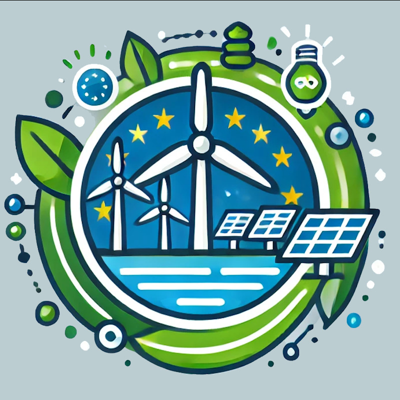

European Circular Economy Ecosystem
Together We Are Stronger and Greener
Helping small businesses become more efficient and sustainable
News
Partners
Resources
Ongoing Projects
About Us
Contact Us
Click on a country